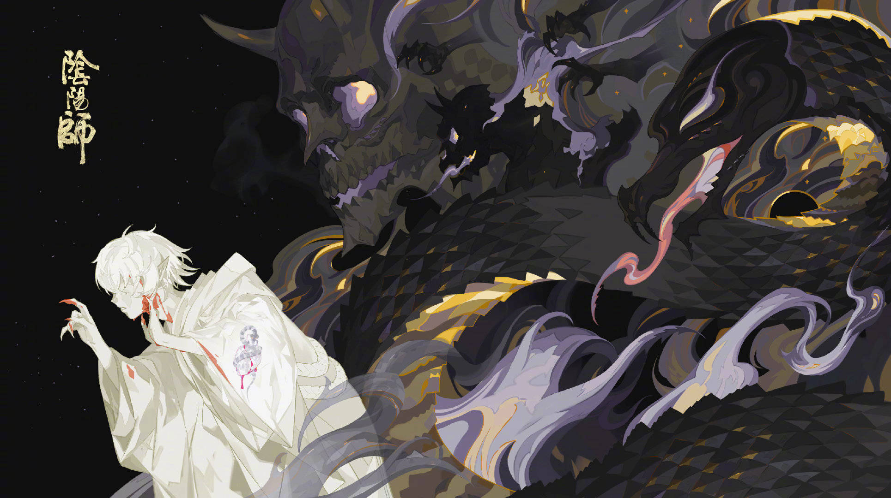

从零开始认识般若
愿予必成，有求必应
首页
日本神话中的般若
阴阳师中的般若
阴阳师中的御怨般若
高清壁纸
回到寝室

背叛
找寻
报仇
重生
告诉你也可以哦，我以前有一个好朋友，是人类。
那时的我可没有现在这么可爱，过去的我长得就和这副面具一样丑陋。所以无论我多么努力，大家仍然很讨厌我。
但是他不一样，他对我说，最重要的不是外表，而是心。
其实我也不知道，妖怪到底有没有心，不过我知道，只有他对我最好。
所以我对他也很好，无论他想要什么，我都会想办法满足。
我终于有了这样的朋友，最好的、唯一的朋友。
可是几年之后，虽然我还和以前一样，他却变成了一个大人。他有了自己的妻子和孩子，变得忙碌起来，再也没有时间陪我玩了。
而且当我想去找他的时候，他也总是借口婉拒。
后来我忍不住找到他的家，站在门前犹豫着不敢进去。
却听到他对自已的妻子说，那个恶心的丑八怪，终于不来了，都缠了我多少年了。
你能明白吗，我以为他把我当做朋友，但他不过是同情我而已。他在心底也很讨厌我，还装成对我很温柔的样子，骗了我。
人类都讨厌丑陋的妖怪。
可是，最丑陋的东西．就是人类的心。
我一次又一次剥下自己的脸，将它们制成面具。在无数次血肉模糊之后，我慢慢变成了可爱漂亮的模样。
哼哼，这一次轮到我来报复恶心又丑陋的人类了！可别小看我，我是不会手下留情的哦。
找到你了，怨气的源头。
这怨恨让大家都避之不及，你却因此而来？
明明是你让我来的嘛！
我只希望再也没有人踏足这个岛，任何人。
难道你不打算报仇吗？
不……我已经……
香气还是那么浓烈，你分明还恨着。
怎能不恨！可是……
而且这破破烂烂的样子，一点都不美呢。
你又知道什么？你又知道什么！！！
被抛弃了？还是被欺骗了？加倍奉还就好了嘛。
那……那可是曾倾心相授的人啊！
嗤，不也背叛了你。
别说了……别说了……
是你自己的错喔！信任人类，就会落得这种下场。
人类……不能信任……
和我一起玩吧，我们去找'那个人'算账。
玩？算账？啊……复仇吗……？
这样可不行呢，一点气势都没有。带上这个！
你的……鬼面。
我知道，我们会相处愉快的。
这个异乡人叫什么名字？
信之介。
一点都不像那边的名字嘛。
是我取的，他说……入乡随俗。
由你开始的'咒'，最后又由你终结。
真是讽刺。
不对噢，这才是正确的因果。
我被背叛也是因果吗？
向人类交出信任，被背叛就是理所当然。
你也……
我让他后悔了哟。可惜，他觉悟得太晚了一点。
长得可爱天真，却比谁都心狠手辣。
你呢？难道还打算放过他吗？
不，绝不！
用他的血洗刷不甘，用他的肉填补伤口。
这才是因果的终结。
我没说错吧~
我们很合拍。
而且你永远不会背叛我。
复仇以后的愉快，真是幸福。
我也如释重负。
该想想下一个目的地了。
也许……我会回去那个小岛上。
回去做那些岛民的许愿娃娃？
不……我连复仇都做不到，更别说实现他人的愿望了。
你只是个软弱的付丧神嘛，何必为他们背负这些。
我只是……无处可去了……
我们来做真正的有求必应神吧！
我们？
与其背负那些愚蠢的愿望，不如与我一起。
我又能……做到什么呢……
做我的式神！与我一起回应那些心怀怨恨的呼唤！
如同……你帮助过我一样……
我们的确很合拍，不是吗？
向你赠予我的鬼面起誓，向你的仇恨献上忠诚。
你发现了吗，仇恨的馥郁香气。
那份仇恨……在呼唤我们。
有求必应的的御怨般若
一定，一定会回应你的恨意。

 找寻
找寻
 报仇
报仇
 重生
找寻
报仇
重生
重生
找寻
报仇
重生